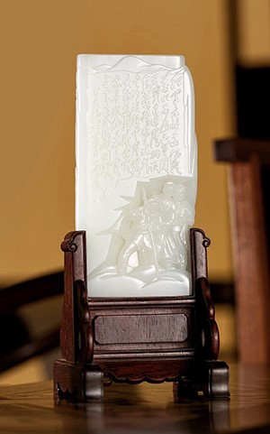

作者：苏然 中国玉石雕刻大师
规格：18.0×9.0×2.3cm 812g
款识：中鼎元、苏然
《夜宴—顶级玉雕艺术品专场》拍品

原料玉质细腻、油润、洁白，苏然大师巧妙保留了两处玉料表面的僵皮，成为调节整个画面颜色与节奏的“点睛之笔”。背面以减地阳刻的手法，重现毛泽东手书《七律 长征》，豪迈雄浑、大气磅礴。
作品整体构图严谨，画面感强，人物刻画细致入微，形象、生动；景致布局协调合理，远中近景层次分明，透视关系处理得当，立体感强。作品极富人文气息，体现了玉石作为记录时代变迁载体的重要价值。这件意义非凡的作品，会让不少藏家的收藏平添砝码。